|
CodeName/Mozilla: Mail: |
UI
Specification
|
|
Off-line Usage - Mail and News |
Last
Modification:
|
|
Author: Jennifer
Glick |
Status: Draft |
||||||||||||
|
Quicklinks:
Account
Central |
Feature Team
|
The offline feature allows users to download their IMAP mail and
news messages to their local computer so that they can disconnect
from the server and still be able to read and compose messages. Once
the user has reconnected with the server, any actions they performed
while offline, such as composing messages or deleting messages, can
be synchronized with the server.
Users need to be able to do the following:
The following is a description of the users who will benefit from offline capabilities and their general needs from the interface.
Mobile User - Generally on fast-connection, disconnected temporarily from the network. Needs to switch on the fly, auto-detection is helpful.
Dialup User - Generally works off-line, connecting periodically to do batch operations. Generally needs way to specify when to connect and when to terminate.
File
Offline Actions
Offline --->
Work Offline | Work Online
Download/Sync Now...
Offline Settings
Get Selected Messages
Get Flagged Messages
Work Offline is available when the user is in online mode. Selecting this menu item changes the state of the program and prevents network connections from occurring.
Work Online is available when a user is offline. Selecting this item will cause the program to switch into online mode and do a Synchronization of all queued actions. It will not download new mail, or news. The user must do this manually using the "Download and Sync" dialog.
Download/Sync Now... brings up the "Download and Sync" dialog. This item is always available, whether online or offline.
Offline Settings - Opens the "Account Settings - Offline and Disk Space" panel for the account with focus. Disabled if the item with focus does not have offline functionality.
Get [Selected | Flagged] Messages downloads the selected / flagged items. These items are only available in the Mail component and only when online. A progress dialog should be displayed while this action is being performed (as feedback so the user knows the action was performed). Note: the parent folder or account of a selected/flagged message does not need to be selected for offline usage for this feature to work.
Each main component (Browser, Mail/News, Address Book, Composer and Instant Messenger) has the online/offline indicator icon in the lower left corner. Clicking the online/offline icon toggles the online/offline state of the program.
[Cmd | Ctrl] clicking the indicator will bring up the Download and Sync dialog (not currently implemented).
There is a context menu associated with the online/offline icon which is identical to the Offline submenu of the File menu (not currently implemented)..
ToolTip when hovering over the icon - "You are offline/online.
Click icon to work online/offline."
When a user selects a message in the thread-pane that is not cached for offline reading, then the following text will appear in the thread pane:
"This message has not been downloaded from the server for reading offline. To read this message, you must reconnect to the network, choose Offline from the File menu and then select Work Online.In the future, you can select which messages or folders to read offline. To do this, choose Offline from the File menu and then select Download/Sync Now... . You can adjust theOffline and Disk Space preference to prevent the downloading of large messages. From the Edit menu, choose Mail/News Account Settings, and then choose Offline and Disk Space." Or the whole paragraph could be replaced by a link reading "Open my offline settings for {accountName}".
Messages that have been downloaded locally for offline use will show up in the thread pane with a different icon (not currently implemented).
Clicking on "Offline settings" from the Account Central page opens the "Mail/News Account Settings: Offline and Disk Space" panel for the selected account. "Offline settings" on the Account Central page is only available for IMAP and News accounts.
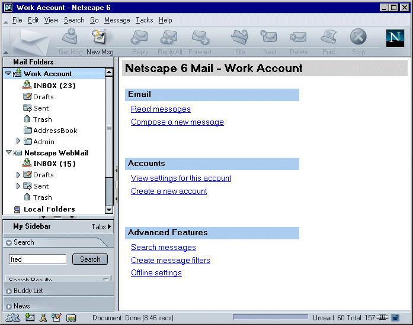
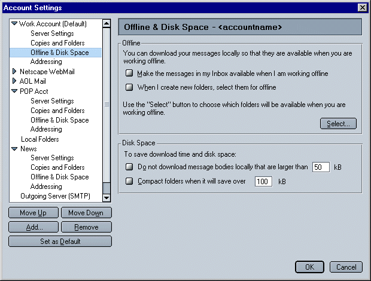
"Make the messages in my Inbox available when I am working offline" - Enabling this checkbox will cause the Inbox messages to be downloaded locally. The Inbox is not flagged as an offline folder. Users would still need to use the "Select Items for Offline Usage" dialog to select other account folders for offline use. When new messages are retrieved (automatically with biff or the "Get Msg" button, the Inbox messages are synched.
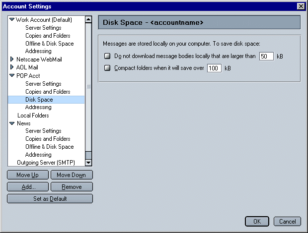

There are two preferences users' can choose from which effect the default state of the system on launch. These choices are:
Multiple User Profiles : Offline global preferences are per profile. When >1 multi-user profiles are set, and the ask me preference is chosen, the ask me dialog will come up after the profile picker is dismissed (that's when we know what prefs are set).
When going online and there are unsent messages and the user has selected "Ask me if I want to send my unsent messages" (default), we will prompt the user to send the unsent mail.
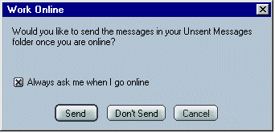
When going offline, and at least one account has been enabled for offline use, and the user has selected "Ask me if I want to download messages for offline" (default), we will prompt the user to download messages.
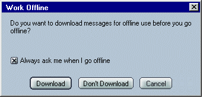
The Download and Sync dialog is opened from the File -> Offline -> Download/Sync Now menu item. This dialog is used to select which types of information to download and synchronize: Mail Folders and/or Newsgroups. A Select button provides the user with a list of accounts, folders and newsgroups to select for download/synchronization. The user can also decide to Go Offline when sync/download is complete..
If no items are configured for download, the mail and/or newsgroup options are disabled.
Pressing OK will dismiss the dialog and display the Synchronize Status progress dialog.
If the Work Offline checkbox is checked when OK is pressed, then after synchronization, Netscape/Mozilla will be left in Offline mode.
POP users will not see Mail messages as one of their choices; they will only see Newsgroup messages.
Pressing the Select... button brings up the offline picker dialog for choosing individual accounts, folders and newsgroups.
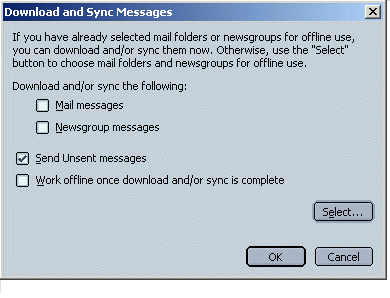
The "Select" button opens the "Select Items for Offline Usage" modal dialog. This dialog enables users to choose which IMAP mail accounts/folders and/or newsgroups to download.
The list of components is presented as a hierarchical list of objects which can be expanded and collapsed to show their children. To the left of each selectable item (accounts, folders, newsgroups) is a checkbox which the user can check to download items for that item.
Note that when a folder has children, that folder can also contain messages. Checking a parent folder does not automatically select the children of the folder for synchronization.
An account can be selected. If an account is selected, all its children are also selected. A disabled checkbox appears for each of the children if the account is selected.
Selection : Selection is indicated by a highlight of the whole line. To select/deselect an item, the user can click on the check column or double click on the line.
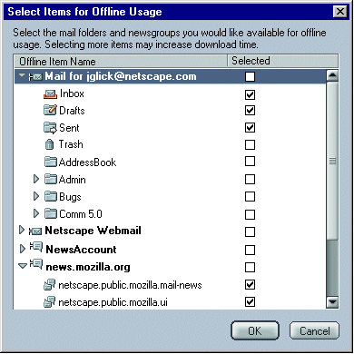
Note: AOL accounts (Netscape only) do not show up in this list.
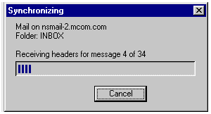
A progress window, modal to Mail, is open during the synch and represents the total number of items remaining to process. Above the indicator, the current server, folder name (or group name) and the number of messages (or articles) remaining is displayed. There is a Cancel button that will cancel the operation from the current folder on (including the current folder), but not for any previous synchronize actions.
If the user selects the "Get Msg" button while offline, the following dialog is displayed.
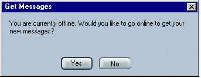
The Folder Properties dialog is displayed when a mail folder has focus and "Folder Properties" is selected.
If the user selects "Select this folder for offline use" this folder is marked for offline usage (and appears checked in the "Select Items" dialog as well).
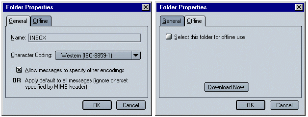
(Note: wording not yet agreed upon)
The Newsgroup Properties dialog is displayed when a newsgroup has focus and "Newsgroup Properties" is selected.
If the user selects "Select this newsgroup for offline use", this newsgroup is marked for offline usage (and appears checked in the "Select Items" dialog as well).
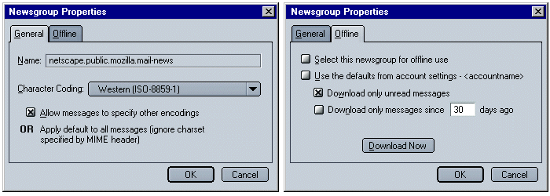
"Use the defaults from account settings - <accountname>" is checked by default, and its sub widgets are disabled. Robin - should it be "...Account Settings..." or "account settings..."?
Address Book